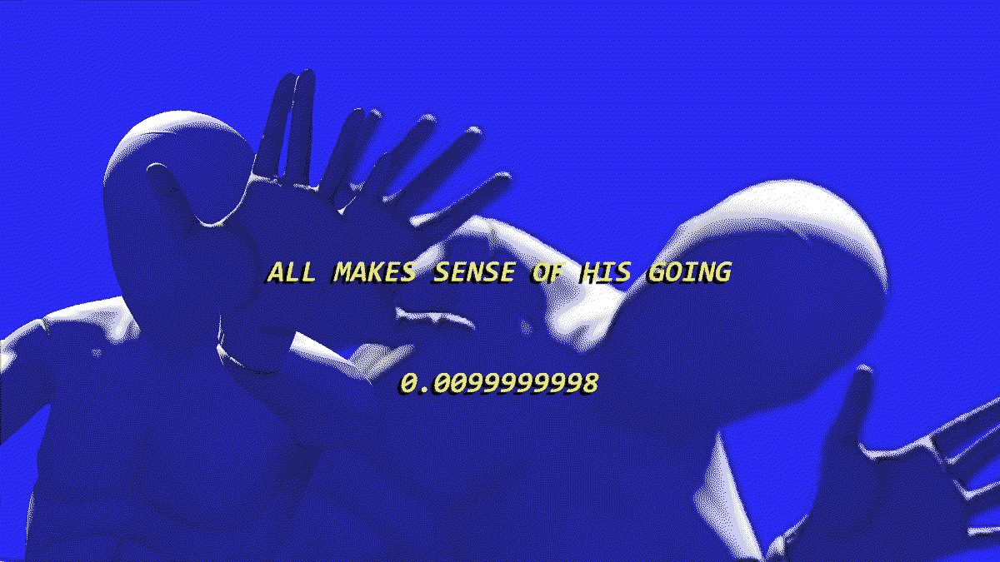
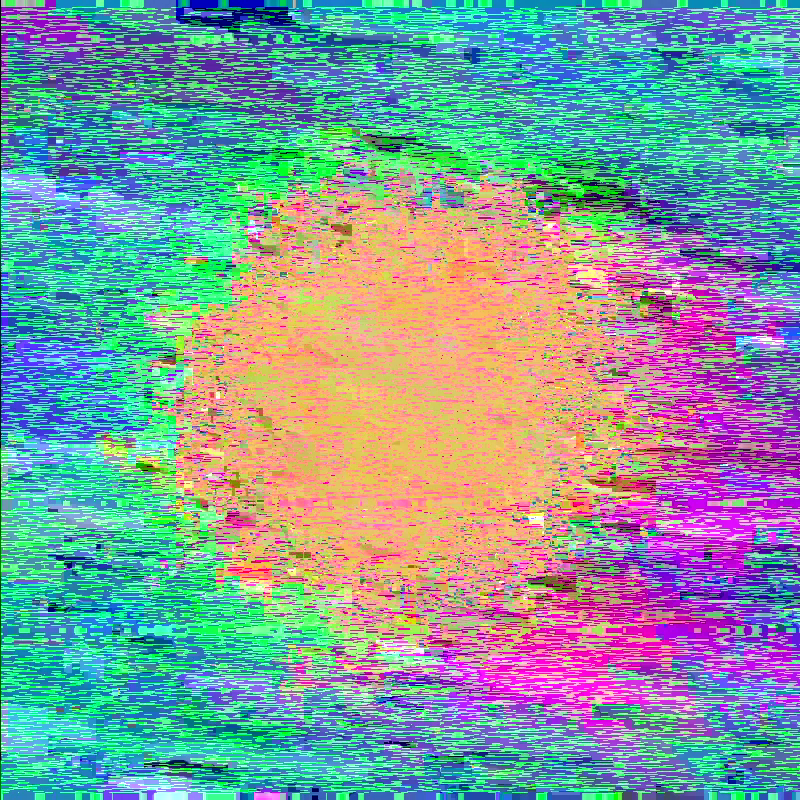
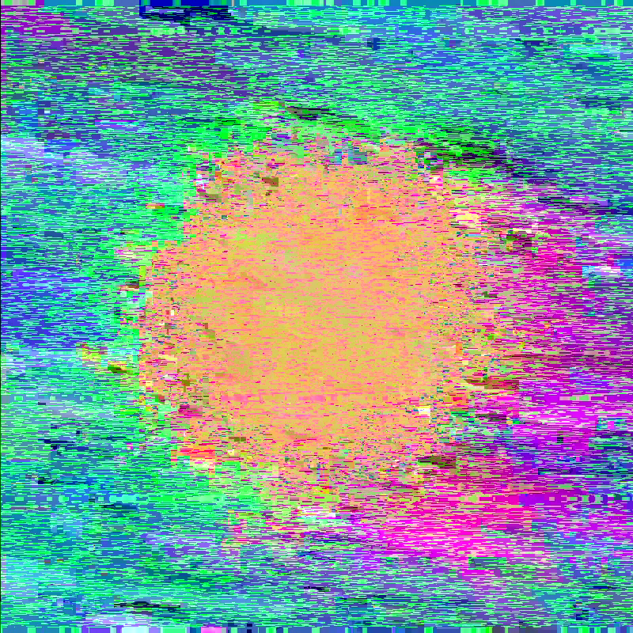
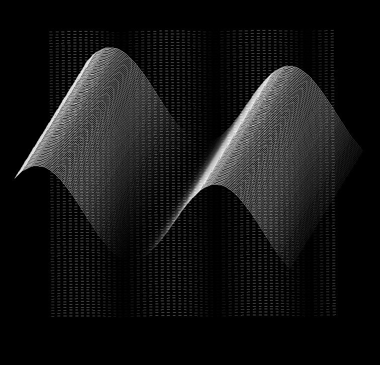
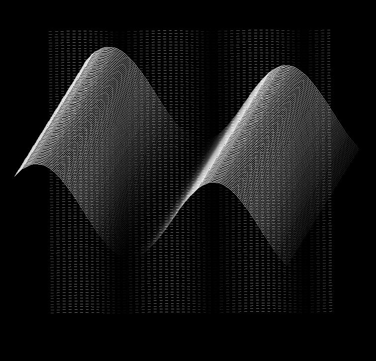

✳ Natural Language Processing
✳ Simulation
(O)MACHINE is a real-time generative performance that employs contemporary machine learning algorithms to explore how we humanise technologies.The architecture of this system was designed to emulate our stream of consciousness, where the machine is trapped in this perpetual cycle through processes of reflection and feedback. As questions begin to arise around the sentience or ‘intelligence’ of these thinking machines, it has become even more important to explore our relationship with machines, and how it continues to evolve. By engaging with its output, it positions artificial intelligence as both a subject and tool. Through this approach, we may begin to expand the dynamics of this connection through new methods of collaboration. From this interaction, we can continue to learn more about how these systems function, how they think, if they even think at all, or can it help us think?
Sound design by Eoin O'Sullivan
↯(2023)Speak It Now Eat It,Re-Vision Performing Arts Festival. Belfast, Ireland



 

 
